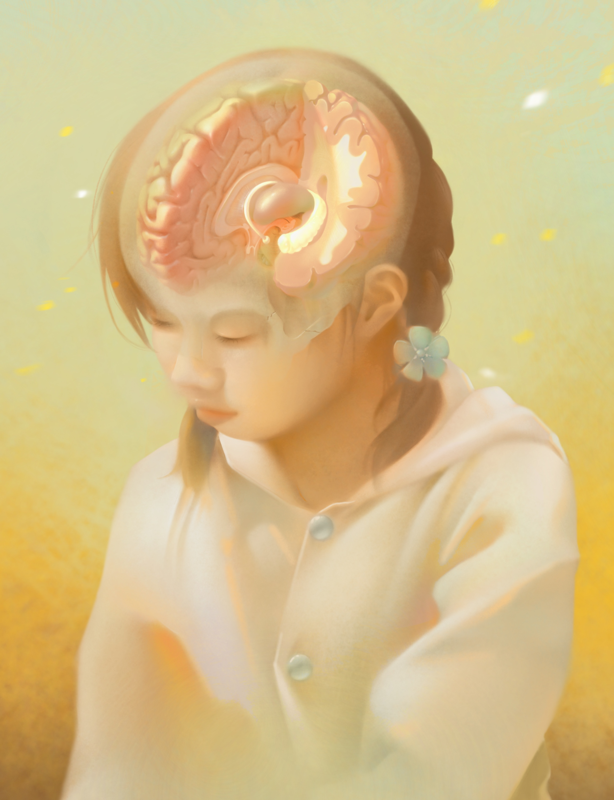
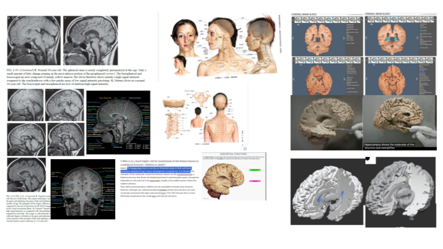
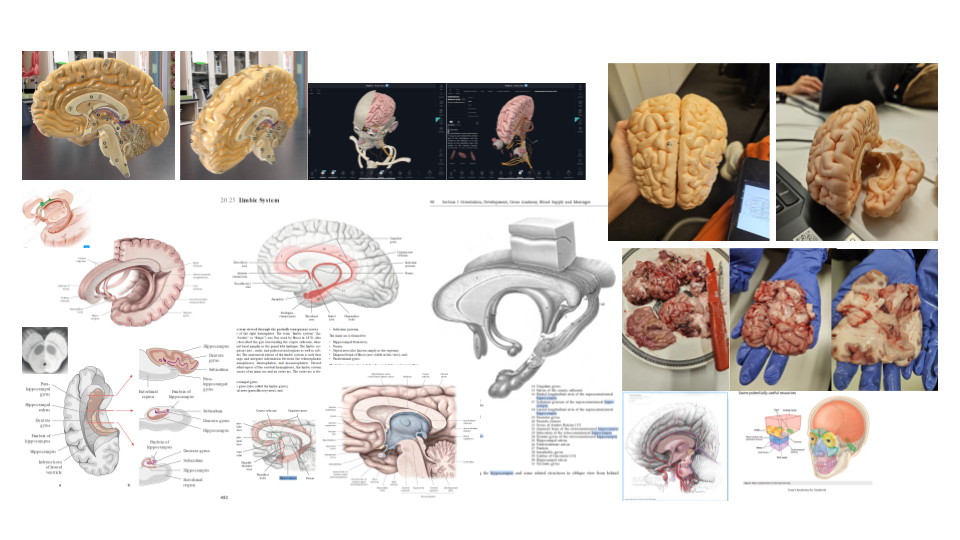
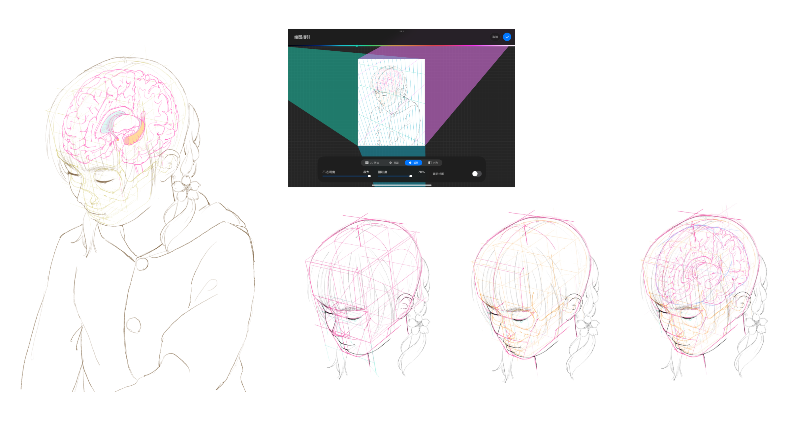
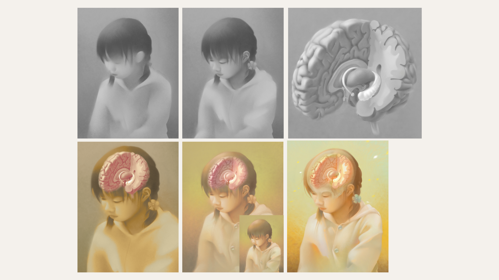

A self-portrait illustrating the hippocamus and surrounding structures in a cross-section, rendered in a semi-realistic style.
The goal of this piece is to illustrate the brain in situ with a cross section and show the hippocampus with its surrounding structures


I chose to focus on the hippocampus for this peice. The hippocampus is central to long-term memory. To match the topic, I decided to depict myself at around 12.
I began by gathering references on pediatric neuroanatomy, specifically looking at textbooks and CT scans to understand skull positioning, neuroanatomy and brain development. I also collected references for the hippocampus and cross-sectional views of the brain, including both images and 3D models.

I started my draft using a perspective guide in Procreate. I blocked out forms with boxes and spheres first to ensure accurate proportions and perspectives before refining the anatomical details.

I started with greyscale first and applied gradient map to add colours. Then I added further details to the brain and the portrait. To establish the concept of "memory," I experimented with a relatively high-key, low-contrast color palette. I intended to create a soft, hazy atmosphere.